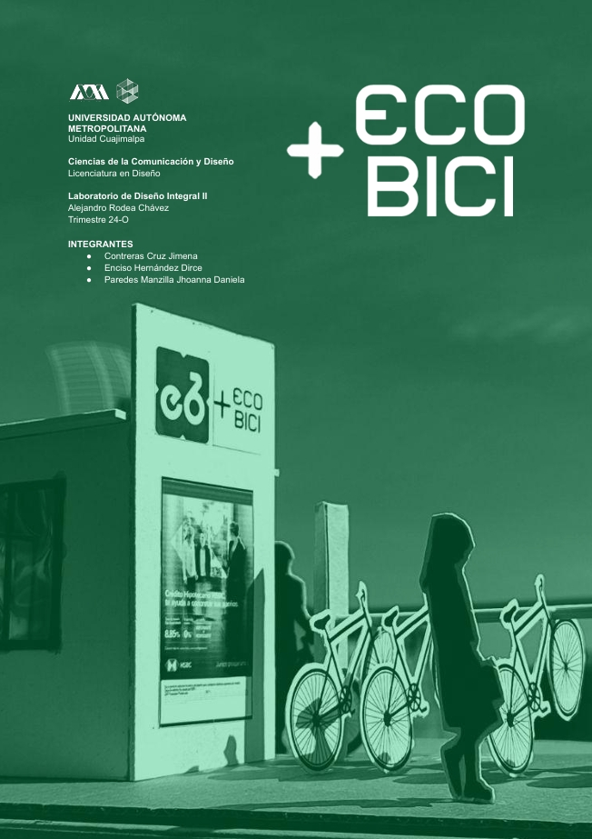
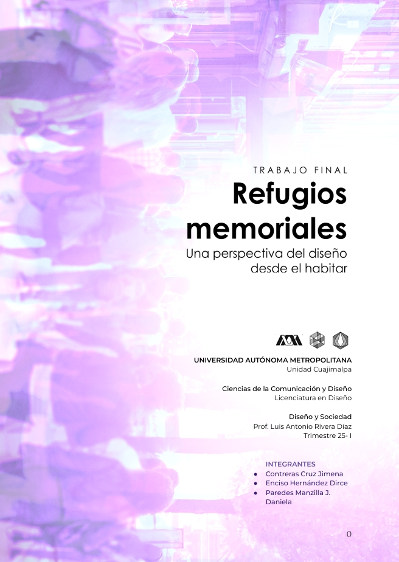
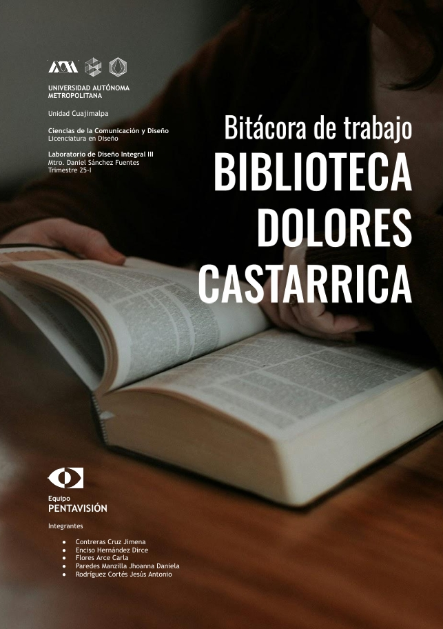
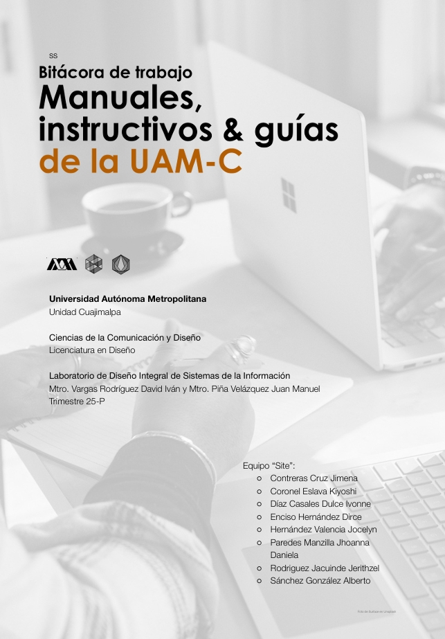

Este proyecto se realizó en el trimetre 24-O en la UEA Laboratorio de
Diseño Integral II, este proyecto se enfoca en Ecobici que forma parte
del servicio de Movilidad Integrada CDMX conformada por el Sistema
de Transporte Colectivo Metro, Metrobús, Red de Transporte de Pasajeros (RTP), Trolebús,
Cablebús y por supuesto Ecobici.
El proyecto propone la mejora en la interfaz y base de
datos de la app, así como la asistencia personal (kiosko) en las
cicloestaciones.

Refugios Memoriales
Refugios Memoriales es un ensayo que se realizó en el trimetre 25-I en la UEA Diseño y Sociedad,
en este ensayo buscamos encontrar el trasfondo y significado del diseño
basándonos en nuestra trayectoria como diseñadores integrales. A modo de ejemplificar nuestra concepción del diseño utilizaremos
como base los refugios, desde su creación hasta su actual concepción.

"Mi primer práctica de campo", el proyecto se llevo a cabo en el trimetre 25-I en la UEA Laboratorio de
Diseño Integral III, este proyecto se enfoca en brindar una difusión efectiva que fomente la ocupación de la Biblioteca Dolores
Castarrica por los habitantes del pueblo de Cuajimalpa con el fin de generar
pertenencia por el lugar.

El "Site" es un proyecto se realizó en el trimetre 25-P en la UEA Laboratorio de
Diseño Integral de Sistemas de la Información, este proyecto propone un rediseño de textos instruccionales para trámites escolares (reinscripción, recuperación, alta de seguro, becas, etc.) en la UAM Cuajimalpa.
Además busca abordar la falta de visibilidad, síntesis y precisión de los trámites escolares en la UAM Cuajimalpa.
